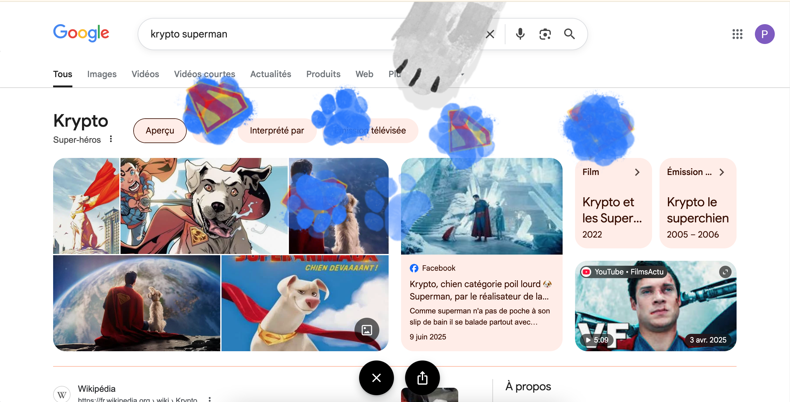

Faites des taches de pattes sur la page de recherche
Cet Easter Egg imprime les pattes de Krypto sur la page de recherche.
1. Rends-toi sur Google.
2. Tape "krypto superman" dans la barre de recherche.
3. Tache la page !
Essaye Krypto Superman maintenant !
